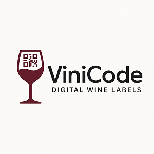

ViniCode
DIGITAL WINE LABELS
ქართული ღვინის ისტორია უძველესი და უნიკალური კულტურული მემკვიდრეობაა, რომელიც 8 000 წელზე მეტს ითვლის და მსოფლიოში ერთ-ერთ უძველეს მეღვინეობის ტრადიციად ითვლება.
არქეოლოგიურმა კვლევებმა აჩვენა, რომ ჯერ კიდევ ძვ.წ. VI ათასწლეულში, სამხრეთ კავკასიაში — განსაკუთრებით კი თანამედროვე საქართველოს ტერიტორიაზე — ადამიანი ღვინოს ამზადებდა ვაზის კულტივირებული ჯიშებიდან. შულავერის გორაზე და იმერეთის ძველი სოფლების გათხრებში ნაპოვნია თიხის ქვევრები (ქვები), რომელთა კედლებზეც აღმოჩნდა ღვინის ქიმიური ნარჩენები და ვაზის მტევნების ანაბეჭდები.
დღეს საქართველო აღიარებულია, როგორც „ღვინის აკვანი“. ექსპორტი სწრაფად იზრდება ევროპის, ამერიკისა და აზიის ბაზრებზე. ჩვენ ვაკავშირებთ ტრადიციებსა და თანამედროვე გამოწვევებს.
ჩვენი მიზანი საერთოა!
ჩვენ ვართ ViniCode — ქართული კომპანია, რომელიც სპეციალიზებულია ღვინის ეტიკირებისთვის ევროკავშირის შესაბამისი QR კოდების შექმნაში.
ჩვენი ჰოსტინგით და ვებ მომსახურებით თქვენი პროდუქცია მეტად გამჭირვალე და სანდო ხდება მომხმარებლისთვის.
EU რეგულაცია 2021/2117 2023 წლის დეკემბრიდან ავალდებულებს იმპორტირებულ ღვინის ბოთლებს ჰქონდეთ ნუტრიციული და ინგრედიენტების შესახებ ინფორმაცია, რომელიც შესაძლოა ხელმისაწვდომი გახდეს QR კოდის მეშვეობით.
ViniCode ამ მიმართულებით მუშაობს რეგულაციის ამოქმედების დღიდან და უკვე ორი წელია ვამზადებთ QR კოდებს და ინდივიდუალურ ინტერნეტ გვერდებს ღვინის მწარმოებლებისთვის, რომლებიც ექსპორტზე არიან ორიენტირებული.
რატომ ViniCode?
- ✅ EU-ს მოთხოვნებთან 100%-ით შესაბამისი ვებსაიტი თითოეული ღვინის ბოთლისთვის
- ✅ უნიკალური QR კოდები ბეჭდვისთვის
- ✅ სწრაფი მომსახურება და მუდმივი მხარდაჭერა
- ✅ ჰოსტინგი და ვებ დეველოპმენტი
- ✅ თანამშრომლობის მრავალწლიანი გამოცდილება
პ 